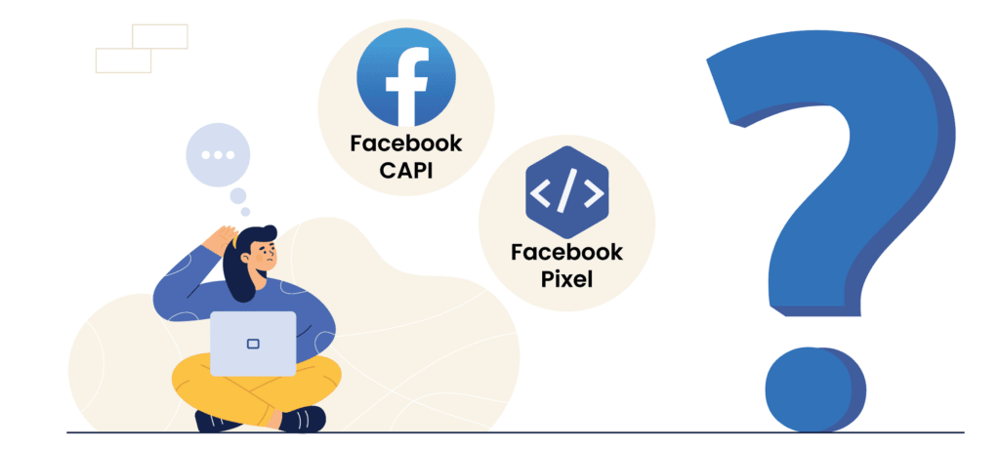

Short answer: Your Meta tracking works correctly when every real purchase or lead is recorded once in Events Manager, with the right value, sent by both the Pixel (browser) and the Conversions API (server), and deduplicated through a shared event ID. The fastest test is to compare Meta's reported conversions with the actual orders or leads in your shop or CRM for the same period.
Key takeaways
- The Meta Pixel runs in the browser; the Conversions API (CAPI) sends the same events from your server. Using both gives Meta more complete data.
- When you use both, each event must carry the same
event_nameandevent_id, so Meta counts it once instead of twice. - Meta's numbers will never match your shop exactly. A large over-count usually means duplicate events; a large under-count usually means missing events or consent blocking.
- In the EU, server-side tracking does not remove the need for user consent.
What is the difference between the Meta Pixel and the Conversions API?
The Meta Pixel is a piece of JavaScript on your website that sends events (page views, add to cart, purchases) from the visitor's browser to Meta. The Conversions API sends the same kind of events directly from your server or platform to Meta.
The Pixel alone loses data when browsers block scripts, when ad blockers are active, or when a page closes before the event fires. CAPI fills those gaps. Meta recommends using both together.
Step 1: Compare Meta with your real orders
Before opening any technical tool, do this:
- In Meta Events Manager, note the number of Purchase (or Lead) events for the last 30 days.
- In your shop, CRM or form inbox, count the real orders or leads for the same 30 days.
- Compare.
How to read the result:
- Meta shows far more than reality → events are probably duplicated (e.g. the Pixel installed twice, or the thank-you page fires on every reload).
- Meta shows far fewer → events are missing, CAPI is not set up, or consent is blocking more than expected.
- Roughly similar → good. Continue with the checks below to confirm quality.
Step 2: Check which events fire with Meta Pixel Helper
Install the free Meta Pixel Helper Chrome extension, then go through your site like a customer: view a product, add it to the cart, start checkout, and (on a test order) complete a purchase.
Look for:
- The same Pixel ID appearing twice (a sign of double installation, e.g. through a plugin and Google Tag Manager).
- Purchase firing on pages where nothing was bought.
- Missing
valueandcurrencyon Purchase events.
Step 3: Use Test Events in Events Manager
In Events Manager, open Test events, enter your website URL, and repeat the customer journey. You will see each event as it arrives, and whether it came from the browser (Pixel), the server (CAPI), or both.
Step 4: Confirm deduplication
If an event arrives from both browser and server, Meta needs a way to know it's the same event. This is done by sending the same event_name and the same event_id from both sources.
In Events Manager, open each key event and check the deduplication status in the overview. If Meta reports that browser and server events are not being deduplicated, your conversions are being counted twice — and Meta's algorithm is learning from inflated numbers.
Step 5: Check Event Match Quality
For events sent through CAPI, Events Manager shows an Event Match Quality score from 0 to 10. It reflects how well Meta can match the event to a real person.
To improve it, send more customer information parameters with server events, hashed as Meta requires: email, phone number, first and last name, city, country, and the fbp and fbc browser identifiers. Only send data you are allowed to process under your privacy policy.
Step 6: Verify your domain and event setup
In Business Settings, check that your website domain is verified. Then confirm that the event you optimise your campaigns for (usually Purchase or Lead) is active and receiving data from both browser and server.
Step 7: Check consent (EU businesses)
If your business serves users in the EU, the Pixel should only fire after the visitor accepts marketing cookies in your cookie banner. Test it: open your site in a private window, decline cookies, and check with Pixel Helper that no Pixel events fire.
Server-side events through CAPI also need a lawful basis under GDPR. Moving tracking to the server is a data-quality improvement, not a way around consent rules.
Where AI helps — and where it doesn't
AI tools are useful for comparing exports: for example, matching a list of orders from your shop with the events Meta received, or spotting days when events suddenly dropped. That saves time.
But AI cannot see inside your Events Manager, test your checkout, or tell whether a missing event is a bug or a consent decision. In my audits, AI-assisted analysis points to where to look; the actual checks above are done by hand in the accounts.
Frequently asked questions
event_id. Attribution windows also play a role, since Meta credits conversions within its attribution window.